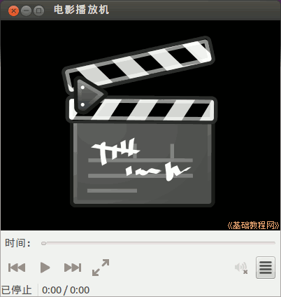
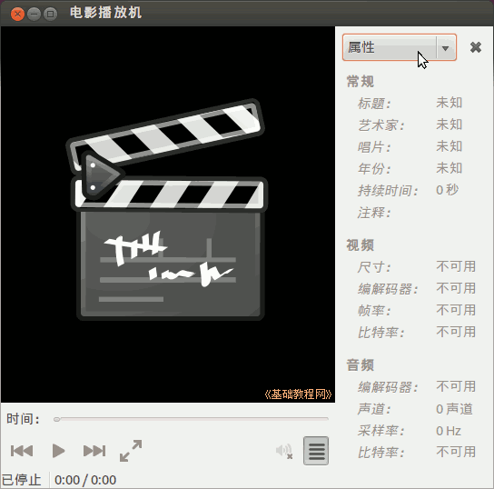
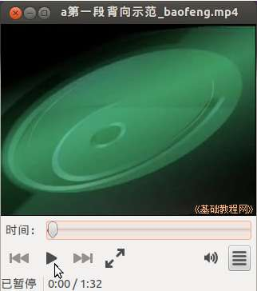
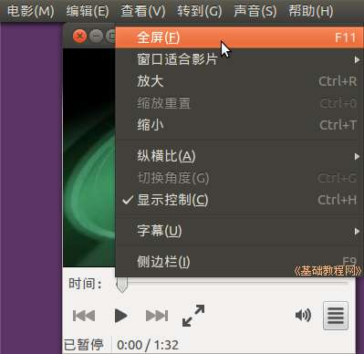
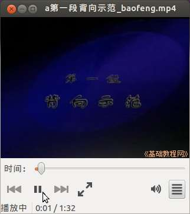
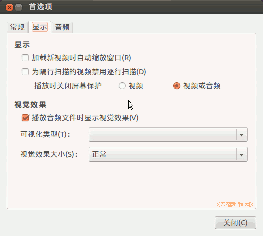
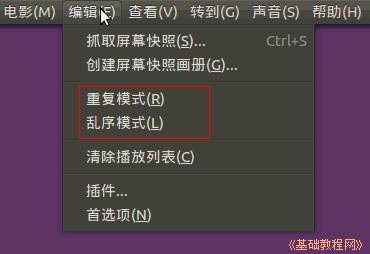

Ubuntu 入门操作指南
作者：TeliuTe 来源：基础教程网
四十二、电影播放机 返回目录 下一课使用它，您可以播放音乐、视频、影碟等多媒体文件；
1、电影播放机
1）点击主按钮，在搜索中输入 totem ，打开程序，或者依次点“主按钮、所有程序、过滤结果、媒体、电影播放机”；

2）窗口中间是视频窗口，下边是播放控制区，右边侧栏里可以切换属性和播放列表；

3）双击一个多媒体文件会自动打开播放窗口，点右下角的“侧边栏”按钮关闭侧栏；

4）在视频窗口中双击，或者点菜单“查看 - 全屏”可以切换到全屏观看；

5）点下边的控制按钮可以暂停播放，再点继续播放；

6）点菜单 “编辑 - 首选项 - 显示”，可以在播放时禁用屏幕保护，以及播放音乐时不显示视觉效果；

7）在“编辑”菜单中，可以勾选“重复”播放和乱序播放；

本节学习了电影播放机的基础知识，如果你成功地完成了练习，请继续学习下一课内容；
本教程由86团学校TeliuTe制作|著作权所有
基础教程网：http://teliute.org/
美丽的校园……
转载和引用本站内容，请保留版权信息和本站链接。